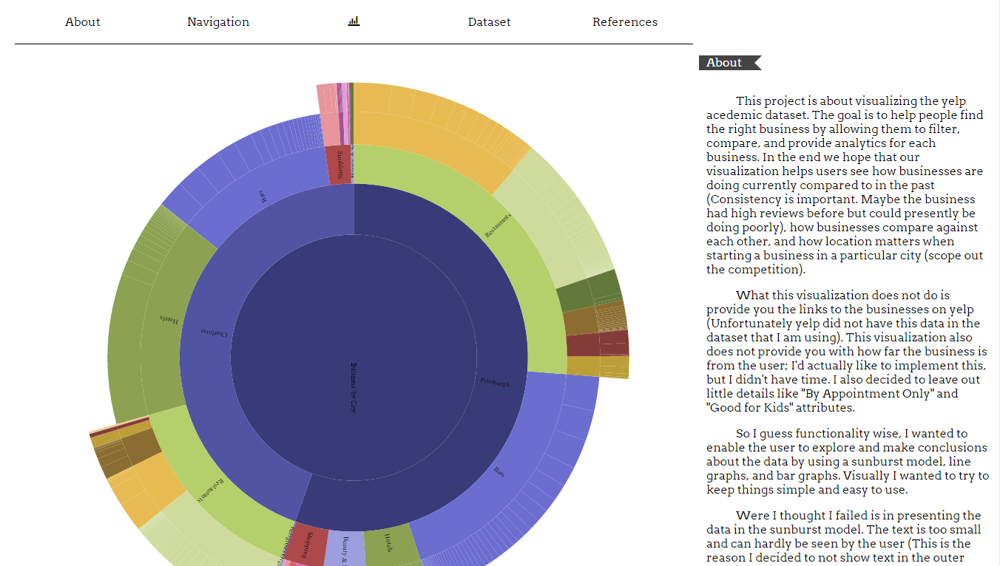
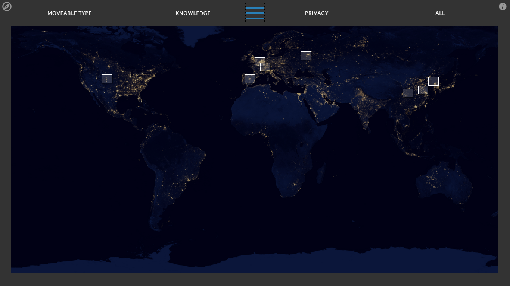
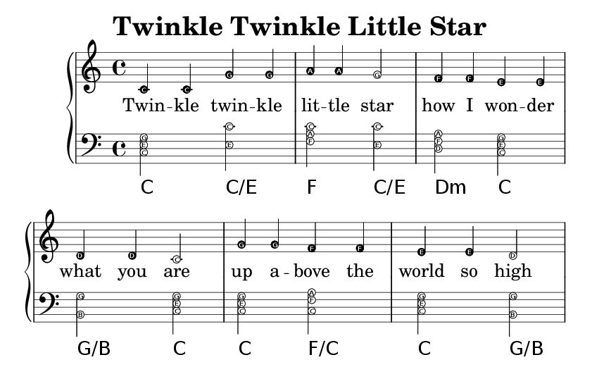

-

The goal of this application is to help users find the right business by allowing them to filter and compare, and by providing them
with analytics for each business. In the end, I hope that the visualization helps users see how businesses are currently doing compared
to how they did in the past, and how businesses compare against each other.
-

In this class project we were to identify, articulate, and connect key themes from the in class readings with a topic/idea we are intersted in investigating.
We used the medium of hypermedia on the Internet to convey and support our idea and themes from the readings. The first part of this assignment is
to come up with a concept, or story, to tell. We then curated a set of 8-15 found media assets, which consist of images, texts, sounds clips, and video
that will support our idea.
-
There is a secret message hidden in the image! In this class project I implemented an image stegosystem that takes an 8 bit greyscale
bmp image, hides a message into the least significant bit (LSB) of each pixel, extracts the message from the stego image, and attack a suspicious image.
-

This project is related to the project above. In it I implemented another stegosystem using midi files. The goal was to hide a user given message
into a meta event and extract the message by locating the meta event in the track I created. Given a .mid file I needed to determine whether or not it
has any secret messages embedded. If it did I displayed this message to the user.